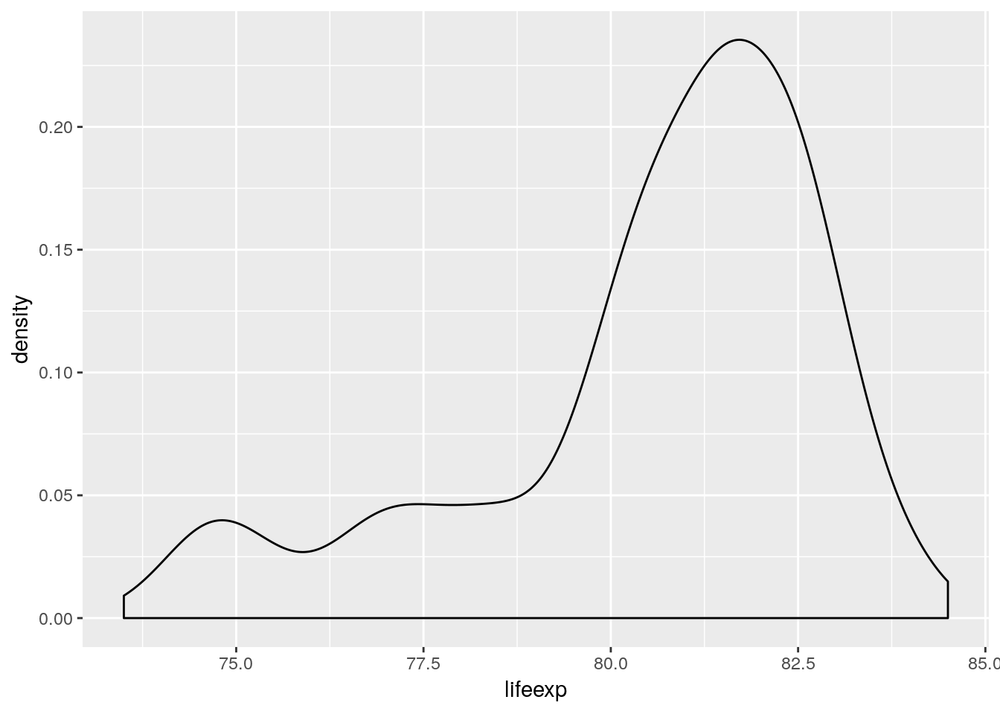

4 Visualization
4.1 The “tidy” approach to data visualization
Data visualization in the tidyverse revolves around three concepts:
- Tidy Data Data is stored is a data frame with cases as rows and variables as columns.
- Mappings Variables are mapped to visual attributes, called aesthetics.
- Layers Plots are build layer by layer. There are different types of layers, each changing a different aspect of a plot, i.e. coordinate system, scales, statistical transformations or visual marks.
Part of the tidyverse is a package called ggplot2 which is what we are going to use to produce plots. ggplot2 is an implementation of the Grammar of Graphics, a domain specific language to specify visualizations.
4.2 The Grammar of graphics
Data, Statistics, Aestetics, Scales, Geometry, Coordinates.
- Data
- Observations of one or more variables.
- Statistics
Transformations of the data prior to plotting.
- Algebraic transformations (log, exp, sqrt, identical…)
- Aggregating statistical transformations (mean, median, mode, bin, linear regression…)
- Non-aggregating statistical transformations (sort, rank, cut…)
- Aesthetics
The visual representation of a variable.
- Position.
x,y,xmin,xmax,ymin,ymax,xend,yend - Colour.
colour,fill,alpha - Size.
size - Shape, Pattern.
shape,linetype - Group.
group - Angle, Slope, Intercept, Texture, …
- Position.
- Scales
The way a variable is mapped to a visual representation.
- Discrete, Continous. e.g.
scale_x_discrete,scale_colour_continuous - Concerning Position, Colour, Size, Shape… e.g.
scale_y_continuous,scale_size,scale_shape() - Breakpoints, Labels
- Transformations (log, sqrt, reverse)
- Discrete, Continous. e.g.
- Geometry
General “shape” or “type” of the graphic
- Scatterplots use
geom_point, - Timelines use
geom_line, - Area charts use
geom_area, - Heatmaps use
geom_tile, - Bar charts use
geom_bar, - there are many more…
- Scatterplots use
- Coordinates
The coordinate system of the plot area.
- Cartesian coordinates
- Polar coordinates
4.2.1 Aesthetics, geometries, and layers
Interactive plots displayed in a web-browser have long arrived in the mainstream with Gapminder World being a true classic of the genre.

Gapminder World
Today we shall recreate the above chart and in doing so learn the basics of ggplot. Key concepts we will tackle are aesthetics, layers, scales, and facets.
Each ggplot starts with data. Data must be a data frame! Today we will use data which comes in form of an R package: The gapminder data.
library(tidyverse)
library(gapminder)
is.data.frame(gapminder)## [1] TRUEhead(gapminder)## # A tibble: 6 x 6
## country continent year lifeExp pop gdpPercap
## <fct> <fct> <int> <dbl> <int> <dbl>
## 1 Afghanistan Asia 1952 28.8 8425333 779.
## 2 Afghanistan Asia 1957 30.3 9240934 821.
## 3 Afghanistan Asia 1962 32.0 10267083 853.
## 4 Afghanistan Asia 1967 34.0 11537966 836.
## 5 Afghanistan Asia 1972 36.1 13079460 740.
## # ... with 1 more rowFirst step in plotting with ggplot – provide ggplot with a data frame:
ggplot(data = gapminder)
ggplot knows about our data but nothing happens yet. We need to add a layer. We add elements to a plot by adding them with a +.
ggplot(data = gapminder) +
geom_line(aes(x = year, y = lifeExp))aes stands for aesthetics: Mappings between variables in our data and visual properties. Each column in our data frame is a variable. Visual properties are manifold and can be x, y, colour, size, shape, alpha, fill, radius, linetype, group…
We use the aes() function to map x-position to the variable Time and y-position to the variable weight. Every time you map a variable to a visual property you do it inside aes()
The plot looks strange. A single line is drawn across all data points. We want separate lines – one time series per country…
ggplot(data = gapminder) +
geom_line(aes(x = year, y = lifeExp, group = country))Note that we don’t write x = gapminder$year or y = "lifeExp". We simply spell out the name of the variable we wish to work with. ggplot is aware of the dataset we work with – it is attached. Quoting the variable names would actually produce unexpected results:
ggplot(data = gapminder) +
geom_line(aes(x = "year", y = "lifeExp", group = "country"))What happened? ggplot interpreted the quoted strings as raw data instead of variable names of our data frame. It then tries to plot it… Always use unquoted column names to address the variables in your data.
Let’s colour all of the lines blue.
ggplot(data = gapminder) +
geom_line(aes(x = year, y = lifeExp, group = country), colour = "blue")We wrote colour = "blue" outside of the aes() function as we set the visual property to a fixed value instead of mapping a visual property to a variable in the data frame. For comparison, let’s move the colour specification into the aes() function:
ggplot(data = gapminder) +
geom_line(aes(x = year, y = lifeExp, group = country, colour = "blue"))Classic ggplot moment here… “blue” gets interpreted as raw data as we have written it inside of the aes() function. ggplot thinks all of our rows belong to group “blue”, mapped to the visual property colour. ggplot assigns a default colour scale of which the first colour is a light red. Here’s the same behaviour, but this time it makes sense as we map colour to an actual variable in our data set.
ggplot(data = gapminder) +
geom_line(aes(x = year, y = lifeExp, group = country, colour = continent))Lesson to be learned: The difference between mapping and setting a visual property. You map visual properties to variables inside aes(), you set visual properties to a fixed value outside of aes().
We can add more than a single layer to a plot. ggplot 2.0.0 comes with 27 geometries (geom). Some of them are super straightforward and just draw points or lines or rectangles. Some draw complex shapes after transforming your data in various ways. Think of geometries as flexible templates for different plot types. Combining different geometries is a common workflow in ggplot. E.g. adding geom_point to geom_line gives lines with points on them:
# filter data to 4 countries only
gapminder_sub <-
filter(gapminder,
country %in% c("China", "Switzerland", "United States", "Somalia"))
ggplot(data = gapminder_sub) +
geom_line(aes(x = year, y = lifeExp, color = country)) +
geom_point(aes(x = year, y = lifeExp, color = country))Note that we did not need to specify the group argument in the last ggplot call. The have mapped colour to country and therefore implicitly specified the grouping structure of our data. We use group only if ggplot fails to correctly guess the grouping.
If we use identical mappings in our layers we can move them into the ggplot() function. Everything inside the ggplot() function is passed down to all other plot elements.
ggplot(data = gapminder_sub, aes(x = year, y = lifeExp, color = country)) +
geom_line() +
geom_point()
We can still add arguments to the individual layers.
ggplot(data = gapminder_sub, aes(x = year, y = lifeExp, color = country)) +
geom_line(aes(linetype = country)) +
geom_point(aes(shape = country))We also have the power to override commands from above:
ggplot(data = gapminder_sub, aes(x = year, y = lifeExp, color = country)) +
geom_line(aes(linetype = country), colour = "black") +
geom_point(aes(shape = country), colour = "black")
4.2.2 Scales
We already know that aesthetics are mappings from data dimensions to visual properties. They tell ggplot what goes where. What are the aesthetics in Gapminder World?
| Data dimension | Visual property | Scale |
|---|---|---|
| GDP per capita | position on x-axis (x) |
scale_x_* |
| Life expectancy | position on y-axis (y) |
scale_y_* |
| Population size | size of plotting symbols (size) |
scale_size_* |
| Geographical Region | colour of plotting symbols (colour) |
scale_colour_* |
Each aesthetic has its own scale
The four aesthetics in Gapminder World are connected to four different scales. The scales are named after the corresponding aesthetic. The naming scheme is scale_<name of aesthetic>_<continuous|discrete|specialized>.
Aesthetics specify the what, scales specify the how
Which colour to use for which level in the data? Where to put the labels on the axis? Which labels to put? The size of the largest plotting symbol, the name of the legends, log-transformation of the y-axis, the range of the axis… These are all examples of scale specifications – specifications on how to map a data dimension to a visual attribute.
Off to work!
library(gapminder)
head(gapminder)## # A tibble: 6 x 6
## country continent year lifeExp pop gdpPercap
## <fct> <fct> <int> <dbl> <int> <dbl>
## 1 Afghanistan Asia 1952 28.8 8425333 779.
## 2 Afghanistan Asia 1957 30.3 9240934 821.
## 3 Afghanistan Asia 1962 32.0 10267083 853.
## 4 Afghanistan Asia 1967 34.0 11537966 836.
## 5 Afghanistan Asia 1972 36.1 13079460 740.
## # ... with 1 more rowThe data already looks tidy. All we have to do is to subset to a single year. Let’s see what ggplot produces if we simply specify the aesthetics to an appropriate geometry.
gapminder %>% filter(year == 2007) %>%
ggplot(aes(x = gdpPercap, y = lifeExp, size = pop, colour = continent)) +
geom_point()A solid foundation. But to close in on the Gapminder World chart we need to customize our scales.
When changing scale attributes we have to make sure to make the changes on the appropriate scale. Just ask yourself:
- What aesthetic does the scale correspond to?
scale_<name of aesthetic>_* - Am I dealing with a discrete or continuous variable?
scale_*_<continuous|discrete>
4.2.2.1 Naming scales
Once you know which scales to use, names are trivial to change.
gapminder %>% filter(year == 2007) %>%
ggplot(aes(x = gdpPercap, y = lifeExp, size = pop, colour = continent)) +
geom_point() +
scale_x_continuous(name = "Income per person (GDP/capita, PPP$ inflation-adjusted)") +
scale_y_continuous(name = "Life expectancy (years)") +
scale_color_discrete(name = "Continent") +
scale_size_continuous(name = "Population, total")You can also use mathematical annotation in your scale names. For further information consult ?plotmath.
gapminder %>% filter(year == 2007) %>%
ggplot(aes(x = gdpPercap, y = lifeExp, size = pop, colour = continent)) +
geom_point() +
scale_x_continuous(name = expression(over(GDP, capita))) +
scale_y_continuous(name = expression(e[0])) +
scale_color_discrete(name = "Continent") +
scale_size_continuous(name = "Population, total")4.2.2.2 Scale transformations
Next, we deal with scale transformations. In Gapminder World the x-axis is log-scaled meaning that the log of the x-axis data is taken before plotting. However, the labels remain on the linear scale. In that regard transforming scales is different from directly transforming the underlying data.
gapminder %>% filter(year == 2007) %>%
ggplot(aes(x = gdpPercap, y = lifeExp, size = pop, colour = continent)) +
geom_point() +
scale_x_continuous(name = "Income per person (GDP/capita, PPP$ inflation-adjusted)",
trans = "log10") +
scale_y_continuous(name = "Life expectancy (years)") +
scale_color_discrete(name = "Continent") +
scale_size_continuous(name = "Population, total")There are many different scale transformations built into ggplot. From the documentation:
Built-in transformations include “asn”, “atanh”, “boxcox”, “exp”, “identity”, “log”, “log10”, “log1p”, “log2”, “logit”, “probability”, “probit”, “reciprocal”, “reverse” and “sqrt”.
gapminder %>% filter(year == 2007) %>%
ggplot(aes(x = gdpPercap, y = lifeExp, size = pop, colour = continent)) +
geom_point() +
scale_x_continuous(name = "Income per person (GDP/capita, PPP$ inflation-adjusted)",
trans = "reverse") +
scale_y_continuous(name = "Life expectancy (years)") +
scale_color_discrete(name = "Continent") +
scale_size_continuous(name = "Population, total")Note that the concept of scale transformations is not limited to position scales.
gapminder %>% filter(year == 2007) %>%
ggplot(aes(x = gdpPercap, y = lifeExp, size = pop, colour = continent)) +
geom_point() +
scale_x_continuous(name = "Income per person (GDP/capita, PPP$ inflation-adjusted)",
trans = "log10") +
scale_y_continuous(name = "Life expectancy (years)") +
scale_color_discrete(name = "Continent") +
scale_size_continuous(name = "Population, total", trans = "log10")4.2.2.3 Scale breaks and labels
Next, we manually specify the axis breaks and labels to be the same as in Gapminder World. Axis breaks are the positions where tick-marks and grid-lines are drawn. Labels specify what text to put at the breaks. Breaks and labels have to be vectors of equal length.
gapminder %>% filter(year == 2007) %>%
ggplot(aes(x = gdpPercap, y = lifeExp, size = pop, colour = continent)) +
geom_point() +
scale_x_continuous(name = "Income per person (GDP/capita, PPP$ inflation-adjusted)",
trans = "log10",
breaks = c(200, 300, 400, 500,
600, 700, 800, 900,
1000, 2000, 3000, 4000, 5000,
6000, 7000, 8000, 9000,
10000, 20000, 30000, 40000, 50000,
60000, 70000, 80000, 90000),
labels = c("200", "", "400", "",
"", "", "", "",
"1000", "2000", "", "4000", "",
"", "", "", "",
"10000", "20000", "", "40000", "",
"", "", "", "")) +
scale_y_continuous(name = "Life expectancy (years)",
breaks = c(25, 30, 35, 40, 45, 50,
55, 60, 65, 70, 75, 80, 85)) +
scale_color_discrete(name = "Continent") +
scale_size_continuous(name = "Population, total")OK, that was effective but clumsy. Luckily ggplot does not care how we generate the vector of breaks. We can use any R function as long as it outputs a vector. Even better, instead of manually spelling out the labels for each break we can write a short function that takes the breaks as input and formats them. Much nicer code – same result.
gapminder %>% filter(year == 2007) %>%
ggplot(aes(x = gdpPercap, y = lifeExp, size = pop, colour = continent)) +
geom_point() +
scale_x_continuous(name = "Income per person (GDP/capita, PPP$ inflation-adjusted)",
trans = "log10",
breaks = apply(expand.grid(1:9, 10^(2:4)), 1, FUN = prod)[-1],
labels = function(x) ifelse(grepl('^[124]', x), x, '')) +
scale_y_continuous(name = "Life expectancy (years)",
breaks = seq(25, 85, 5)) +
scale_color_discrete(name = "Continent") +
scale_size_continuous(name = "Population, total")
The concept of breaks and labels does not only apply to continuous axis. All scales have breaks and labels. E.g. on a colour scale the breaks are the colour keys, the labels are – well – the labels. We reorder the items on our discrete scale by specifying the breaks in the required order. We also use an R function to capitalize the labels.
gapminder %>% filter(year == 2007) %>%
ggplot(aes(x = gdpPercap, y = lifeExp, size = pop, colour = continent)) +
geom_point() +
scale_x_continuous(name = "Income per person (GDP/capita, PPP$ inflation-adjusted)",
trans = "log10",
breaks = apply(expand.grid(1:9, 10^(2:4)), 1, FUN = prod)[-1],
labels = function(x) ifelse(grepl("^[124]", x), x, "")) +
scale_y_continuous(name = "Life expectancy (years)",
breaks = seq(25, 85, 5)) +
scale_color_discrete(name = "Continent",
breaks = c("Asia", "Africa", "Americas", "Europe", "Oceania"),
labels = toupper) +
scale_size_continuous(name = "Population, total")Finally, let’s choose some sensible breaks and labels for the size scale.
gapminder %>% filter(year == 2007) %>%
ggplot(aes(x = gdpPercap, y = lifeExp, size = pop, colour = continent)) +
geom_point() +
scale_x_continuous(name = "Income per person (GDP/capita, PPP$ inflation-adjusted)",
trans = "log10",
breaks = apply(expand.grid(1:9, 10^(2:4)), 1, FUN = prod)[-1],
labels = function(x) ifelse(grepl("^[124]", x), x, "")) +
scale_y_continuous(name = "Life expectancy (years)",
breaks = seq(25, 85, 5)) +
scale_color_discrete(name = "Continent",
breaks = c("Asia", "Africa", "Americas", "Europe", "Oceania"),
labels = toupper) +
scale_size_continuous(name = "Population, total",
breaks = c(1E6, 10E6, 100E6, 1E9),
labels = function(x) format(x, big.mark = ",", scientific = FALSE))
4.2.2.4 Scale limits
We match the maximum and minimum value of our xy-scales with those of the Gapminder World chart by specifying the limits of the scales.
gapminder %>% filter(year == 2007) %>%
ggplot(aes(x = gdpPercap, y = lifeExp, size = pop, colour = continent)) +
geom_point() +
scale_x_continuous(name = "Income per person (GDP/capita, PPP$ inflation-adjusted)",
trans = "log10",
breaks = apply(expand.grid(1:9, 10^(2:4)), 1, FUN = prod)[-1],
labels = function(x) ifelse(grepl("^[124]", x), x, ""),
limits = c(200, 90000)) +
scale_y_continuous(name = "Life expectancy (years)",
breaks = seq(25, 85, 5),
limits = c(25, 85)) +
scale_color_discrete(name = "Continent",
breaks = c("Asia", "Africa", "Americas", "Europe", "Oceania"),
labels = toupper) +
scale_size_continuous(name = "Population, total",
breaks = c(1E6, 10E6, 100E6, 1E9),
labels = function(x) format(x, big.mark = ",", scientific = FALSE))4.2.2.5 Limiting versus zooming
Note that values outside of the limits will be discarded. This is of importance if you want to zoom into a plot. Here we “zoom” by changing the limits of the scales…
gapminder %>% filter(year == 2007) %>%
ggplot(aes(x = gdpPercap, y = lifeExp)) +
geom_point(size = 20) +
scale_x_continuous(limits = c(5000, 20000)) +
scale_y_continuous(limits = c(70, 80))## Warning: Removed 104 rows containing missing values (geom_point).
…and here we zoom by changing the limits of the coordinate system
gapminder %>% filter(year == 2007) %>%
ggplot(aes(x = gdpPercap, y = lifeExp)) +
geom_point(size = 20) +
coord_cartesian(xlim = c(5000, 20000), ylim = c(70, 80))4.2.3 Excercise: The grammar of graphics
4.3 Order
4.3.1 Factor levels control the order of discrete scales
It is easy to order items on a numerical scale. One just puts them on the number line. Usually low on the left and hight to the right. But what about discrete items? ggplot orders them according to the order of their factor levels. An example:
# test data
foo <- data.frame(id = 1:4,
sex = c("Female", "Female", "Male", "Male"))
foo## id sex
## 1 1 Female
## 2 2 Female
## 3 3 Male
## 4 4 Maledata.frame, just like ggplot, automatically converts a character vector to a factor using as.factor. The levels order of that factor follows the sequence of occurrence in the data.
levels(foo$sex)## [1] "Female" "Male"ggplot constructs discrete scales in the order of the levels of the underlying factor variable. Here, Females first, males after.
ggplot(foo) +
geom_point(aes(x = sex, y = id, color = sex))
If we reverse the level order of the sex variable we change the way ggplot orders the discrete items.
foo$sex## [1] Female Female Male Male
## Levels: Female Malefoo$sex <- factor(foo$sex, levels = c("Male", "Female"))
foo$sex## [1] Female Female Male Male
## Levels: Male FemaleNow we have males first and females last.
ggplot(foo) +
geom_point(aes(x = sex, y = id, color = sex))ggplot(foo) +
geom_point(aes(x = sex, y = id, color = sex)) +
facet_wrap(~sex)NEVER OVERRIDE THE LEVELS DIRECTLY WHEN JUST MEANING TO CHANGE THE ORDER! You’ll screw up your data. In our case we just changed the sex of the participants.
foo$sex## [1] Female Female Male Male
## Levels: Male Femalelevels(foo$sex) <- c("Female", "Male")
foo$sex## [1] Male Male Female Female
## Levels: Female Male4.3.2 Layers are plotted on top of each other
library(gapminder)
gapminder %>%
filter(year %in% c(1952, 2007)) %>%
group_by(year) %>%
mutate(e0rank = n() - rank(lifeExp)) %>%
filter(e0rank <= 30) %>%
ggplot(aes(x = gdpPercap, y = lifeExp)) +
geom_text(aes(label = country, color = continent, size = pop)) +
scale_x_log10() +
geom_smooth(method = "lm", size = 2) +
facet_wrap(~year)gapminder %>%
filter(year %in% c(1952, 2007)) %>%
group_by(year) %>%
mutate(e0rank = n() - rank(lifeExp)) %>%
filter(e0rank <= 30) %>%
ggplot(aes(x = gdpPercap, y = lifeExp)) +
geom_smooth(method = "lm", size = 2) +
geom_text(aes(label = country, color = continent, size = pop)) +
scale_x_log10() +
facet_wrap(~year)4.3.3 Sometimes the row-order of the data matters
Sometimes the row-order of a dataframe has implications for visualization. This is true for ggplots geom_point() which draws points in the order of occurence in a dataframe. In the example below we scale the points by the population size of a country. Arranging the dataframe by decreasing population size makes sure that the smaller points are drawn last, i.e. on top of the larger points.
gapminder %>%
arrange(pop) %>%
ggplot(aes(x = gdpPercap, y = lifeExp, size = pop)) +
geom_point(fill = 'black', color = 'white', shape = 21) +
scale_x_log10() +
scale_size_area() +
facet_wrap(~year)gapminder %>%
arrange(desc(pop)) %>%
ggplot(aes(x = gdpPercap, y = lifeExp, size = pop)) +
geom_point(fill = 'black', color = 'white', shape = 21) +
scale_x_log10() +
scale_size_area() +
facet_wrap(~year)gapminder %>%
filter(country == 'Afghanistan') %>%
arrange(pop) %>%
ggplot(aes(x = lifeExp, y = gdpPercap)) +
geom_path() +
geom_label(aes(label = year))gapminder %>%
filter(country == 'Afghanistan') %>%
arrange(year) %>%
ggplot(aes(x = lifeExp, y = gdpPercap)) +
geom_path() +
geom_label(aes(label = year))
4.4 Facets
4.4.1 Comparing sub-groups to totals
https://drsimonj.svbtle.com/plotting-background-data-for-groups-with-ggplot2
4.5 Chart type vocabulary
4.5.1 Visualizing distributions
Distribiutions are at the heart of statistics as they inform us about about the “typical” in a population, the degree of deviation from the typical, the “extreme”, and everything in between. Visualizing the distribution of a collection of values allows us to
- appreciate the diversity in our sample,
- understand the variability around a mean,
- choose the correct model specification,
- decide if the data is iid.
4.5.1.1 Continuous
# European regional population statistics
load('data/euro_regio/euro_regio_eu.Rdata')The most popular technique to visualize a distribution is the histogram. Here we use it to show how life-expectancy is distributed across the regions of the European Union in 2015.
euro_regio_eu %>%
filter(year == 2015) %>%
ggplot() +
geom_histogram(aes(x = lifeexp))## `stat_bin()` using `bins = 30`. Pick better value with `binwidth`.## Warning: Removed 18 rows containing non-finite values (stat_bin).A histogram is a visual representation of binned data: a variable gets cut into intervals, the cases tabulated over those intervals and the resulting counts plotted as a shaded region. This whole binning operation is performed by geom_histogram(). We can change the details of that data transformation, e.g. using single year bins.
euro_regio_eu %>%
filter(year == 2015) %>%
ggplot() +
geom_histogram(aes(x = lifeexp), binwidth = 1)## Warning: Removed 18 rows containing non-finite values (stat_bin).By default ggplot picks a binwidth of 1/30th the range of the data, yet the optimal binwidth for a histogram depends on the range of your data, the number of observations, and the desired trade-off between detail and smoothing. The fewer the observations, the bigger the bins need to be in order to create a usefull histogram. Say we want to show the distribution of life-expectancy among the 29 French NUTS-2 regions in 2015. Below you see 3 variations of doing that, using a binwidth of A) 1 month, B) half a year, and C) a year.
cowplot::plot_grid(
euro_regio_eu %>%
filter(year == 2015, country_code == 'FR') %>%
ggplot() +
geom_histogram(aes(x = lifeexp), binwidth = 1/12),
euro_regio_eu %>%
filter(year == 2015, country_code == 'FR') %>%
ggplot() +
geom_histogram(aes(x = lifeexp), binwidth = 1),
euro_regio_eu %>%
filter(year == 2015, country_code == 'FR') %>%
ggplot() +
geom_histogram(aes(x = lifeexp), binwidth = 5),
labels = 'AUTO', ncol = 3
)## Warning: Removed 4 rows containing non-finite values (stat_bin).
## Warning: Removed 4 rows containing non-finite values (stat_bin).
## Warning: Removed 4 rows containing non-finite values (stat_bin).Consider using a dot-histogram when ovservations are few (<100). A dot-histogram1 draws a single point for each observation, located at the center of the respective bin. This makes for a very intuitive visualization as the individual observations are still visible despite being aggregated into bins. Sadly the implementation of dot-histograms in ggplot is a bit lacking at the time of writing which necessitates to use our data wrangling skills to get a nice result.
# A trick I've learned from John Tukey's EDA: Label individual cases in
# dot-histograms. Aggregate and individual view at once!
# Here's how you do it in R: (link)
the_data <-
euro_regio_eu %>%
filter(year == 2015, country_code == 'ES') %>%
select(id = nuts2_code, value = unemp)
# Label by id -------------------------------------------------------------
the_data %>%
mutate(bin = cut(value, seq(0, 30, 5))) %>%
na.omit() %>%
group_by(bin) %>%
arrange(value) %>%
mutate(count = 1:n()) %>%
ggplot(aes(x = bin, y = count)) +
geom_point(aes(color = id), size = 11, color = 'grey80') +
geom_text(aes(label = id), size = 3.4) +
scale_x_discrete(drop = FALSE) +
theme_minimal()# Label by value ----------------------------------------------------------
the_data %>%
mutate(bin = cut(value, seq(0, 30, 5))) %>%
na.omit() %>%
group_by(bin) %>%
arrange(value) %>%
mutate(count = 1:n()) %>%
ggplot(aes(x = bin, y = count)) +
geom_point(aes(color = id), size = 11, color = 'grey80') +
geom_text(aes(label = value), size = 3.4) +
scale_x_discrete(drop = FALSE) +
theme_minimal()# Works with grouping as well ---------------------------------------------
the_data2 <-
euro_regio_eu %>%
filter(country_code == 'ES', year %in% c(2007, 2012, 2017)) %>%
select(group = year, id = nuts2_code, value = unemp)
the_data2 %>%
mutate(bin = cut(value, seq(0, 40, 5))) %>%
na.omit() %>%
group_by(group, bin) %>%
arrange(value) %>%
mutate(count = 1:n()) %>%
ggplot(aes(x = bin, y = count)) +
geom_point(aes(color = id), size = 6, color = 'grey80') +
geom_text(aes(label = id), size = 2) +
scale_x_discrete(drop = FALSE) +
theme_minimal() +
coord_flip() +
facet_wrap(~group)Whenever a geom uses a statistical transformation, such as the binning in geom_histogram(), a number of new variables are internally computed by ggplot prior to plotting. In case of geom_histogram() these new variables are
count: number of points in bindensity: density of points in binncount: count, scaled to a maximum of 1ndensity: density, scaled to a maximum of 12
Via the stat() function we can use any of the computed variables in our plot. This makes it possible to draw histograms with density on the y axis instead of the default count.
euro_regio_eu %>%
filter(year == 2015) %>%
ggplot() +
geom_histogram(aes(x = lifeexp, y = stat(density)), binwidth = 1)## Warning: Removed 18 rows containing non-finite values (stat_bin).An alternative to the histogram is the density plot.
euro_regio_eu %>%
filter(year == 2015) %>%
ggplot() +
geom_density(aes(x = lifeexp))## Warning: Removed 18 rows containing non-finite values (stat_density).
4.5.1.2 Discrete
4.5.1.3 Multivariate
euro_regio_eu %>%
filter(year == 2015) %>%
ggplot() +
geom_density(aes(x = lifeexp, y = stat(count), color = region)) +
geom_density(aes(x = lifeexp, y = stat(count)))## Warning: Removed 18 rows containing non-finite values (stat_density).
## Warning: Removed 18 rows containing non-finite values (stat_density).4.5.2 Visualizing association
4.5.2.1 continuous vs. continuous
# scatterplot
# different symbols
# fill versus color
# white outline / overlap
# dot chart
# bubble chart
# dot density map4.5.2.2 continuous vs. discrete
4.5.2.3 discrete vs. discrete
4.5.3 Visualizing change
4.5.3.1 Lines
4.5.3.2 Slope
4.5.3.3 Connected dots
4.5.3.4 Waterfall
4.5.3.5 Bump
4.5.4 Visualizing surfaces
4.5.4.1 Contours
4.5.4.2 Heatmap
geom_tile() draws rectangles at specified xy-positions. A common use-case is to visualize the value of a variable across a surface by coloring the rectangles according to value. This plot type is also known as a heatmap. Demographers refer to heatmaps as Lexis Surfaces if the surface is defined by period/cohort and age. Here’s an example showing Swedish age specific, logged death rates over time:
load('data/hmd/hmd_swe.RData')
swe <- mutate(hmd_swe, nmx = nDx/nEx)
ggplot(swe) +
geom_tile(aes(x = period, y = age, fill = log(nmx)))
geom_rect() is an alternative to geom_tile() but we need to specify all four corners of each rectangle we wish to draw. As each age and period group is a single year wide, we specify rectangles which have a width and height of one unit.
ggplot(swe) +
geom_rect(aes(xmin = period, xmax = period+1, ymin = age, ymax = age+1,
fill = log(nmx)))Only specifying x and y position and omitting colour puts a grey rectangle at every xy position that appears in the data. The resulting plot gives us information about the period-ages where we have mortality data on Swedish females.
By default the small rectangles have a width and height of 1 scale unit and are drawn over the mid-points of the corresponding x and y values.
ggplot(swe) +
geom_tile(aes(x = period, y = age), colour = "white") +
scale_x_continuous(breaks = 1800:1810) +
scale_y_continuous(breaks = 100:110) +
coord_equal(xlim = c(1800, 1810), ylim = c(100, 110))Shifting the data by 0.5 in x and y aligns things neatly.
ggplot(swe) +
geom_tile(aes(x = period+0.5, y = age+0.5),
colour = "white") +
scale_x_continuous(breaks = 1800:1810) +
scale_y_continuous(breaks = 100:110) +
coord_equal(xlim = c(1800, 1810), ylim = c(100, 110))If our data does not come in 1 by 1 units we have to adjust the width and/or height of the rectangles. width and height are regular aesthetics and can be mapped to variables in the data.
cod <- read_csv('data/cod/cod.csv')## Parsed with column specification:
## cols(
## Year = col_integer(),
## Age = col_integer(),
## AgeGr = col_character(),
## w = col_integer(),
## Sex = col_character(),
## COD = col_character()
## )The Cause of Death data features age groups of different sizes (1, 4, or 5 years). This is how it looks like if we plot it without any regard to the size of the age groups.
cod %>% filter(Sex == "Female") %>%
mutate(Year = Year + 0.5) %>%
ggplot() +
geom_tile(aes(x = Year, y = Age),
colour = "white")Now we shift the rectangles away from the age midpoint and scale them in height according to the width of the age group.
cod %>% filter(Sex == "Female") %>%
mutate(Year = Year + 0.5, Age = Age + w/2) %>%
ggplot() +
geom_tile(aes(x = Year, y = Age, height = w),
colour = "white")If we use discrete axis (happens automatically if we supply a non-numeric variable to the x or y aesthetic) we loose any control over the placement of the age or period groups. They will be equally spaced along the axis.
cod %>% filter(Sex == "Female") %>%
mutate(Year = Year + 0.5, Age = AgeGr) %>%
ggplot() +
geom_tile(aes(x = Year, y = Age), colour = "white") +
coord_equal()Avoid character or factor variables as your period or age groups. Whenever possible go with numeric “Start of Interval” and “Interval Width” variables.
4.5.4.2.1 Sequential Colour Scales: Plotting Magnitudes
If we plot magnitudes we would like to use a colour scale which has an intrinsic ordering to it. Scales that vary from dark to light are suitable and we call them “sequential”. scale_fill_brewer(type = "seq") provides you with such a scale.
breaks_nmx <- c(0, 0.0001, 0.001, 0.01, 0.1, Inf)
swe %>%
mutate(nmx_cut = cut(nmx, breaks = breaks_nmx)) %>%
ggplot() +
geom_tile(aes(x = period, y = age, fill = nmx_cut),
position = position_nudge(0.5, 0.5)) +
scale_fill_brewer(type = "seq") +
guides(fill = guide_legend(reverse = TRUE)) +
coord_equal()Continuous colour scales take the form of a smooth colour gradient. Getting the gradient to look like you want can be tricky.
swe %>%
ggplot() +
geom_tile(aes(x = period, y = age, fill = nmx)) +
scale_fill_viridis_c() +
coord_equal()Log transform the colour scale.
swe %>%
ggplot() +
geom_tile(aes(x = period, y = age, fill = nmx)) +
scale_fill_viridis_c(trans = 'log10') +
coord_equal()## Warning: Transformation introduced infinite values in discrete y-axisMake high values dark and low values light.
swe %>%
ggplot() +
geom_tile(aes(x = period, y = age, fill = nmx)) +
scale_fill_viridis_c(trans = 'log10',
direction = -1) +
coord_equal()## Warning: Transformation introduced infinite values in discrete y-axisRescale the colour gradient to increase contrast.
swe %>%
ggplot() +
geom_tile(aes(x = period, y = age, fill = nmx)) +
scale_fill_viridis_c(trans = 'log10',
direction = -1,
values = c(0, 0.3, 0.4, 0.5, 0.6, 1)) +
coord_equal()## Warning: Transformation introduced infinite values in discrete y-axisThrow away data outside of the limits.
swe %>%
ggplot() +
geom_tile(aes(x = period, y = age, fill = nmx)) +
scale_fill_viridis_c(trans = 'log10',
direction = -1,
values = c(0, 0.3, 0.4, 0.5, 0.6, 1),
limits = c(0.001, 0.5)) +
coord_equal()## Warning: Transformation introduced infinite values in discrete y-axisOr instead squish the out-of-bounds data into the limits.
swe %>%
ggplot() +
geom_tile(aes(x = period, y = age, fill = nmx)) +
scale_fill_viridis_c(trans = 'log10',
direction = -1,
values = c(0, 0.3, 0.4, 0.5, 0.6, 1),
limits = c(0.001, 0.1),
oob = scales::squish) +
coord_equal()## Warning: Transformation introduced infinite values in discrete y-axis4.5.4.2.2 Divergent colour scales: Plotting Differences & Proportions
load('data/hmd/hmd.RData')
breaks_prop_nmx <- c(0, 0.3, 0.5, 0.7, 0.9,
1.1, 1.3, 1.5, 1.7, Inf)
hmd %>%
filter(country == 'SWE') %>%
select(sex, period, age, nmx) %>%
spread(sex, nmx) %>%
mutate(sex_ratio = Male/Female,
sex_ratio_disc = cut(sex_ratio, breaks_prop_nmx)) %>%
ggplot() +
geom_tile(aes(x = period, y = age, fill = sex_ratio_disc)) +
scale_fill_brewer(type = "div",
palette = 5) +
guides(fill = guide_legend(reverse = TRUE)) +
coord_equal()Continuous variant.
hmd %>%
filter(country == 'SWE') %>%
select(sex, period, age, nmx) %>%
spread(sex, nmx) %>%
mutate(sex_ratio = Male/Female) %>%
ggplot() +
geom_tile(aes(x = period, y = age, fill = sex_ratio)) +
# takes 6 colours from a brewer palette and interpolates
scale_fill_distiller(type = "div",
palette = "RdBu",
trans = "log2",
limits = c(0.5, 2),
direction = 1,
oob = scales::squish) +
coord_equal()4.5.4.2.3 Qualitative colour scales: Plotting Group Membership
cod %>%
mutate(Year = Year + 0.5, Age = Age + w/2) %>%
ggplot() +
geom_tile(aes(x = Year, y = Age, height = w, fill = COD)) +
coord_equal() +
facet_wrap(~Sex, ncol = 2) +
scale_fill_manual("Dominant cause of death",
values = c("Infections" = "#63C46A",
"Neoplasms" = "#E7CC60",
"Circulatory diseases" = "#FF4B56",
"External" = "#C463AF",
"Other" = "#969696"))4.5.4.3 Tables
hmd %>%
filter(country == 'DEUTE', sex == 'Female',
(period %% 5) == 0, (age %% 5) == 0) %>%
ggplot(aes(x = period, y = age, alpha = lx, size = lx)) +
geom_text(aes(label = ex%/%10),
family = 'mono', fontface = 'bold',
show.legend = FALSE) +
scale_x_continuous(breaks = seq(1900, 2010, 10)) +
scale_y_continuous(breaks = seq(0, 110, 10)) +
theme_bw() +
coord_equal() +
labs(title = 'Decades left to live.')hmd %>%
filter(country %in% c('DEUTE', 'DEUTW'), sex == 'Female',
(period %% 5) == 0, (age %% 5) == 0) %>%
select(country, period, age, ex) %>%
spread(country, ex) %>%
mutate(d_ex = DEUTE - DEUTW) %>%
ggplot(aes(x = period, y = age)) +
geom_text(aes(label = d_ex%/%1, alpha = abs(d_ex%/%1)),
family = 'mono', fontface = 'bold',
show.legend = FALSE) +
scale_x_continuous(breaks = seq(1900, 2010, 10)) +
scale_y_continuous(breaks = seq(0, 110, 10)) +
theme_bw() +
coord_equal() +
labs(title = 'East-West German difference\nin years of remaining life-expectancy.')4.5.5 Excercise: Chart type vocabulary
Using
ggplot2, plot a population pyramid using data of your choice.Calculate the differences of Danish and Swedish remaining male life-expectancies by period and age. Visualize the result as a Lexis surface with a discrete divergent color scale. The choice of breaks is up to you.
4.6 Polish your plot for publication
4.6.1 Highlight
4.6.2 Annotate
4.7 Maps
4.8 Networks
Wilkinson, L. (1999). Dot Plots. The American Statistician, 53(3), 276. https://doi.org/10.2307/2686111↩
you can find out about the computed variables by looking into the help page of a
geom.↩